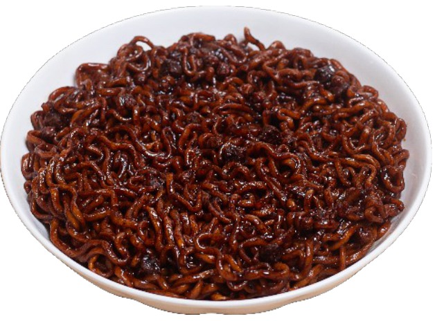
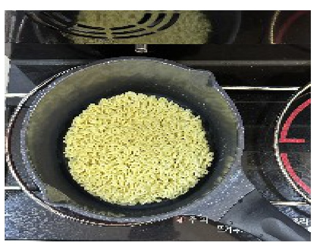
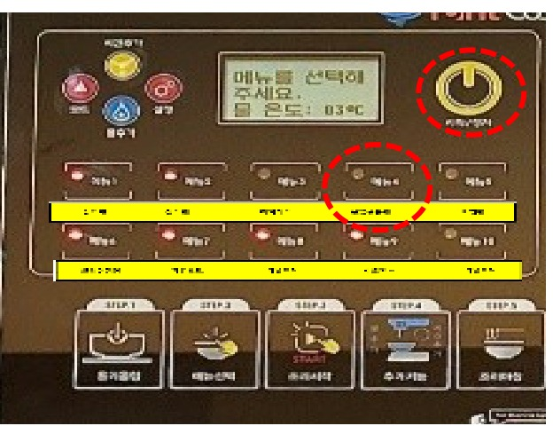
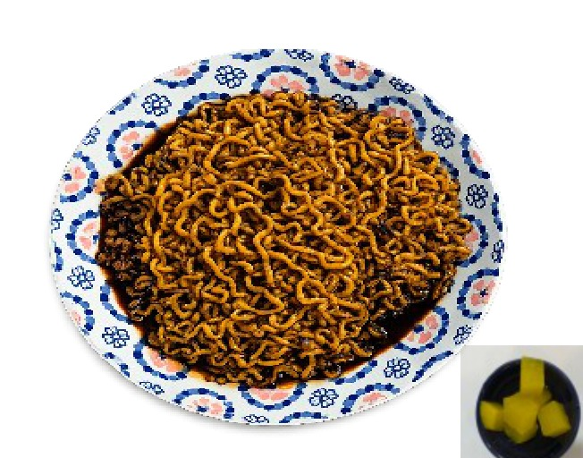
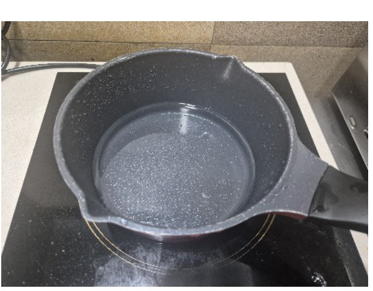
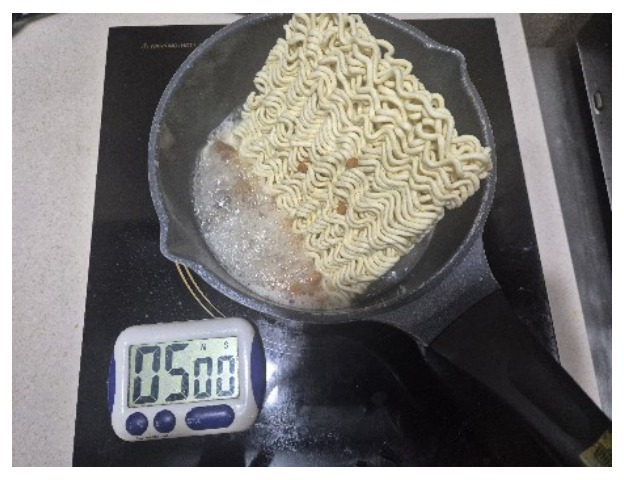
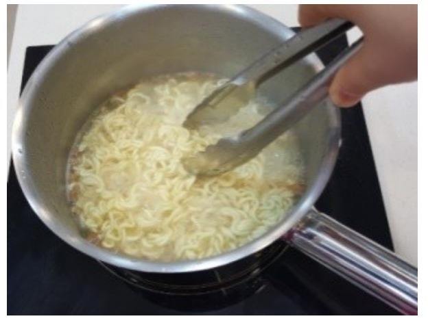
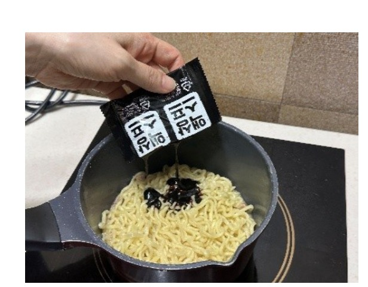
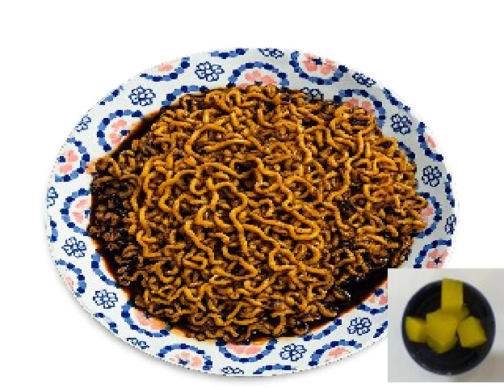

| 메뉴명 | 짜르르 |
|---|
| 판매가격 | 4,500원 |
|---|
| 원재료 | 짜르르 |
|---|
| 사용 부자재 | 덮밥접시 |
|---|
| 메뉴특징 | 굵은 소고기 건더기가 특징인 짜장라면 |
|---|
※ 제조 후 최대한 빨리 제공할 것.
🍜 라면조리기

1
냄비에 짜르르 면사리, 건더기 스프를 넣는다.

2
라면조리기 [불닭볶음면] 모드 선택 후 [시작/정지] 버튼을 누르고, [시간추가]를 1회 눌러 조리를 시작한다.

3
조리가 완료되면 액상스프를 첨가하여 잘 섞이도록 비빈 후 덮밥접시에 담아준다. (단무지 제공)
※ 기존 라면조리기 : [볶음라면] 모드로 조리하기
🔥 인덕션

1
냄비에 물 450g 넣고 인덕션 8번으로 끓인다.

2
물이 끓으면 건더기 스프와 면을 넣고 타이머 5분에 맞춰 끓여준다.

3
중간중간 젓가락으로 면을 풀어 잘 섞어주며 끓인다.

4
면이 익으면 액상스프를 넣고 잘 섞어준다.

5
조리가 완료되면 액상스프를 첨가하여 잘 섞이도록 비빈 후 덮밥접시에 담아준다. (단무지 제공)